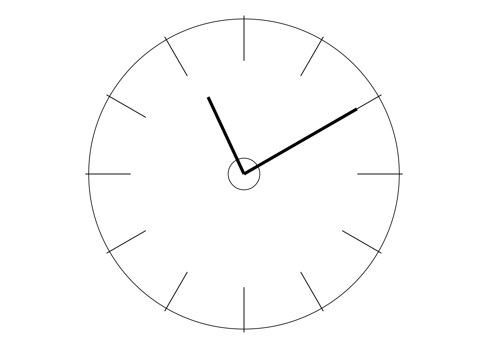
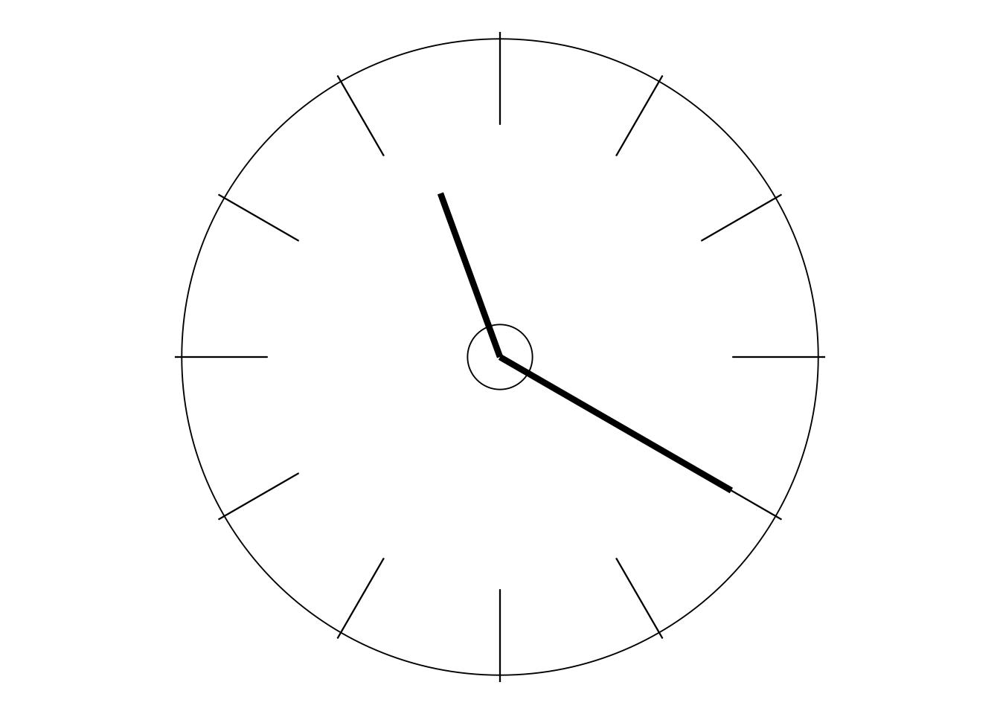
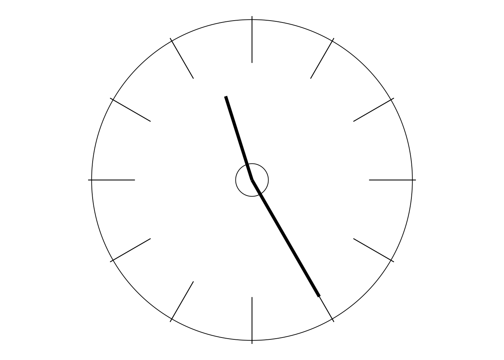
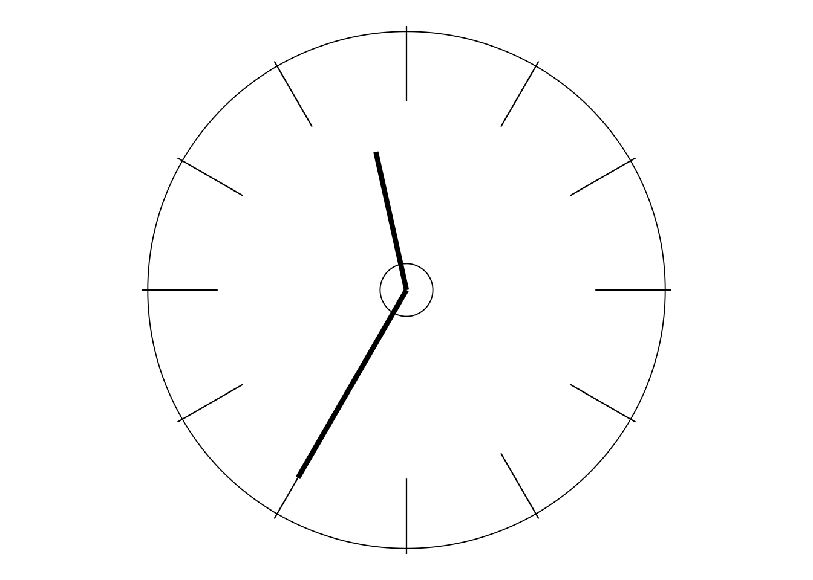

QUALITY, THEORY, PHILOSOPHY, MANAGEMENT,…
How can we describe Dr Deming and his work? Dr Deming is sometimes referred to as a “quality guru” and, in an unpublished booklet that I once read, as “the father figure of the modern quality revolution; perhaps the number one guru”. When I read that booklet, those attributions made me feel a little uneasy. However, if a “guru” is indeed, as quoted there, “a good man, a wise man and a teacher” then I have no problem with it, for I know that all three parts of that description were wholly appropriate to Dr Deming. It was the word “quality” that concerned me, for it occurred to me that, to my recollection, I didn’t hear Dr Deming refer to “quality” very much during the final few years of his life.
However, rather than just depending on memory, I thought I should attempt to find some evidence. So I tried watching and listening carefully to ! The Deming of America—and carrying out some word-counts. Would you believe, throughout that hour-long video, Dr Deming only mentioned “quality” three times! The first mention was:
“Our quality does not stand up. Not many years ago—70 years ago, 80 years ago—this country made half the manufactured product of the world.”
The second mention was in a phrase that I had heard from him time and time again:
“Quality is made at the top.”
Pause for Thought 1-a which follows is also (somewhat unsurprisingly!) on Workbook page 1.
The red box indicates there will now be a Pause for Thought or Activity which is immediately followed by some relevant commentary. My commentary will be in the subsequent shaded red box. So always try to avoid looking inside the shaded box—just a single sentence in this case—while you’re thinking about what the “request for action” is asking you to do. Preferably cover it up with something!
And then, as a case in point, Dr Deming’s third and final mention of “quality” was:
“Sure we want good results. But if you manage by results, quality goes down, morale goes down.”
The following two Pauses for Thought are also on Workbook page 2.
Unlike a red box, a green box indicates an Activity or Pause for Thought with no associated box of commentary.
PAUSE FOR THOUGHT 1-b
Why do you think Dr Deming said that, if you manage by results, both quality and morale go down?
(If you cannot think of reasons now, be sure that you will find plenty as the course progresses.)

PAUSE FOR THOUGHT 1–c
I well remember a time that I met up with an old acquaintance. I hadn’t seen him for a while, so he didn’t know of my change in career and interests (and university)—he thought I still lectured in Mathematical Statistics somewhere else. “So what Department are you in, here at this university?”, he asked. “The Quality Unit”, I said. His face dropped. “Quality? Ugh!”
Why do you think that the word “Quality” might have provoked such a negative reaction?
(For brief discussion see Appendix page 6.)

So, with only three “hits” for “quality” in the video, I thought it worth counting how many times Dr Deming said “management”. Rather more: 14! (And, of course, there were yet more if one also counted “manage”, “manager”, etc.) That’s more like it. Deming’s teaching, certainly during the time that I knew him, was not directly about quality: it was about management and, in particular, the kind of management which produces quality—in the broadest sense of those words.
Interestingly, he came up with the word “theory” 11 times in the video. And that is how he most usually described his work, as:
THEORY OF MANAGEMENT.
Now, “theory” is a word which tends to put some people off. They think of “theory as opposed to practice”, “it’s all right in theory but it won’t work in practice”, etc, i.e. their image is that theory and practice are at opposite ends of a spectrum. But that is not how Dr Deming used the word. As a neat indication of how he saw it, here is just part of a sentence from his 1960 book, Sample Design in Business Research:
“… the theoretical statistician, one who guides his practice with the help of theory …”
And this use of the word does not just apply to statisticians! In Deming’s mind, the very purpose of theory is to help guide better practice. And if a theory does not do that then it’s not good theory and it needs modifying or even abandoning (c.f. the Deming Cycle on Day 11).
Dr Deming’s opening words in one of the many four-day seminars at which I was present summarised it pretty well. He rose slowly to his feet, smiled gently at the 600-strong audience, and said:
“This may be a new experience: you have come to learn. You may have come for a formula. There is no formula. There is no Step 1, Step 2, Step 3, … . We are going to learn a whole lot more. We’re going to learn theory. We’re going to learn why we have to do what we have to do.”
“ … why we have to do what we have to do.” I think there could be no better description of what Dr Deming meant when he used that word “theory”. Theory helps us to understand and think logically: to get those little grey cells (as Hercule Poirot would call them) working for us more constructively and success- fully than ever before. Rather similarly I recall when, at another four-day seminar, Deming was answering a question from a delegate. I cannot remember the question but I certainly remember part of his answer. It was: “I do not want you to do something because ‘Deming said so’. I want you to do it because you understand why ‘Deming said so’.”
Another word that is often used to describe Deming’s work is “philosophy”: the Deming philosophy of management. If you don’t like the word “theory” then it’s pretty certain that you won’t be enthused by the word “philosophy” either! But what is a “philosophy”? A brief way of describing it is as a “way of thinking”. But surely what we do is largely governed by the way we think. So “philosophy” might be rather practical as well …
Finally, just as a passing comment for now but of great relevance to what follows later in the course, here are two other word-counts from Dr Deming’s contributions to The Deming of America. He used the word “system” no less than 24 times, and the word “optimisation” 11 times (just as often as “theory”), invariably in the context of “optimisation of the system”. As one of my main themes which are heard in this Overture, these words are of fundamental importance.

PAUSE FOR THOUGHT 1-a
“Quality is made at the top.” Do you agree, and why?
The quality of what a company provides for its customers, product and/or service, results from how the top management runs the company—and how the company is run depends on top management’s values, principles, priorities and knowledge.